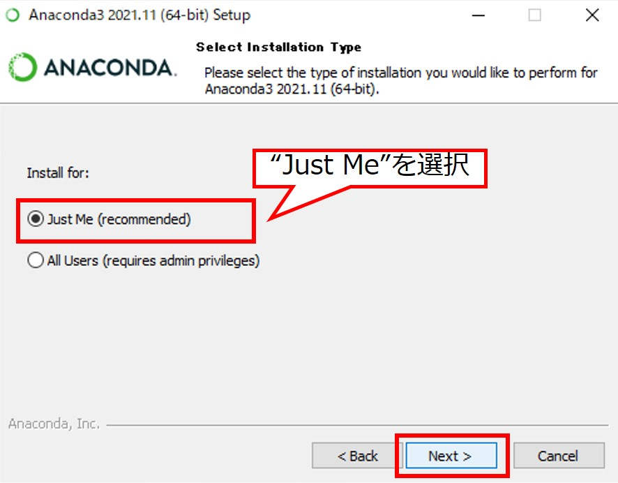
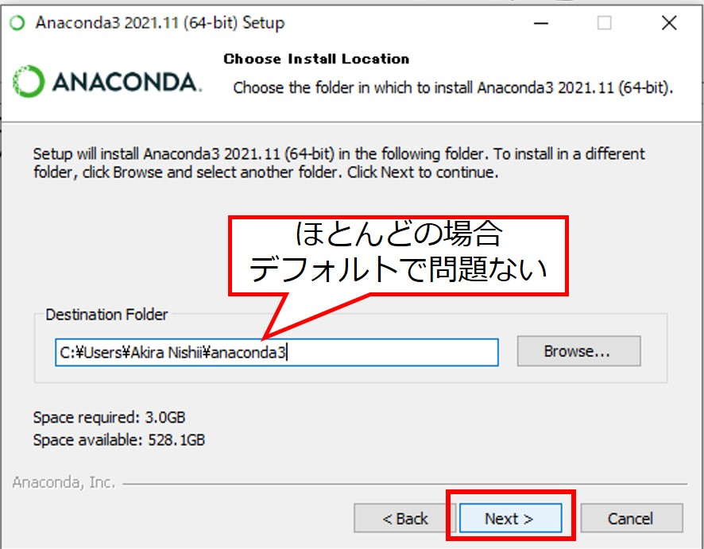
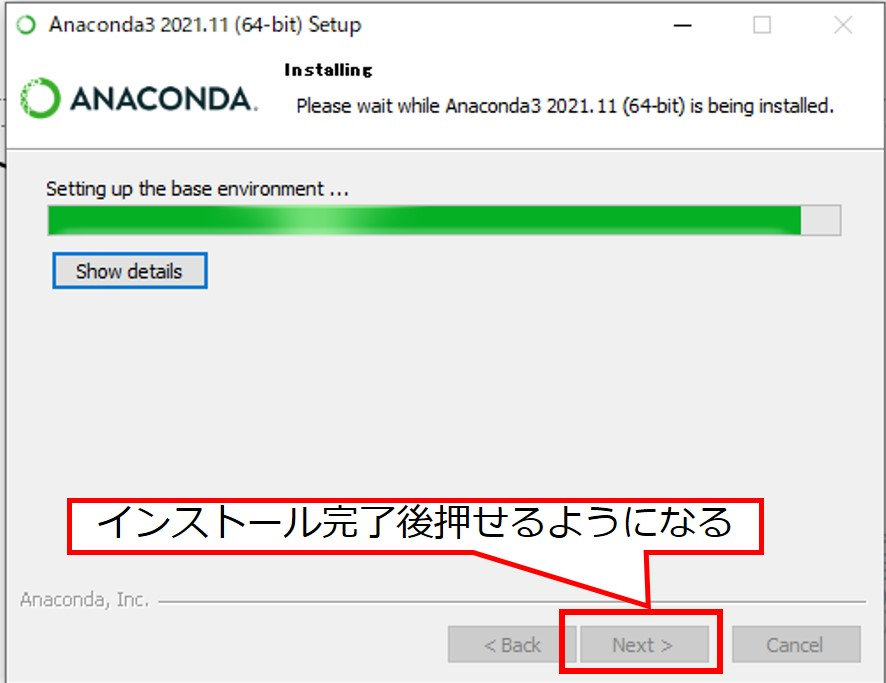
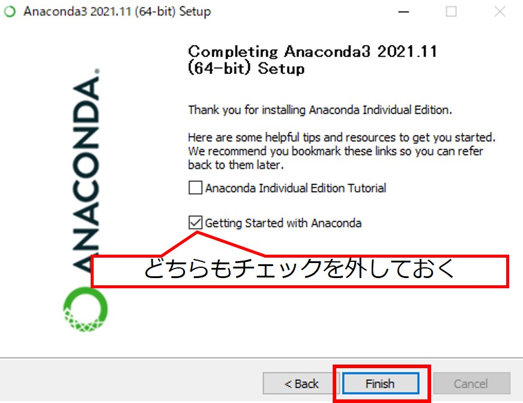
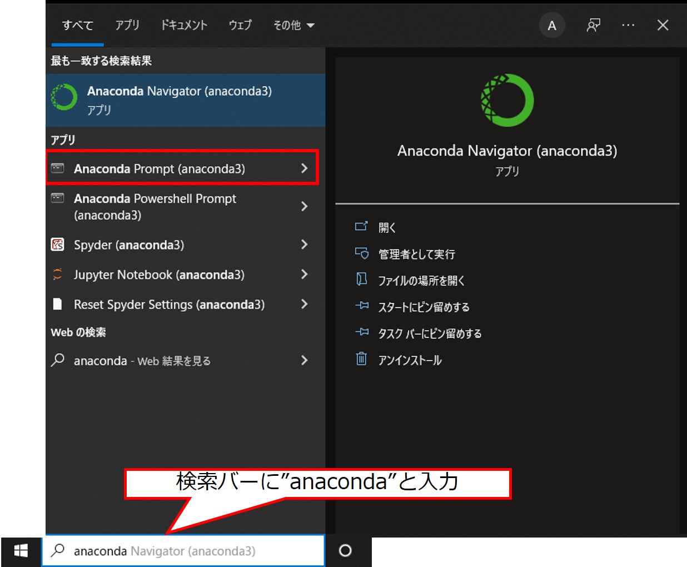
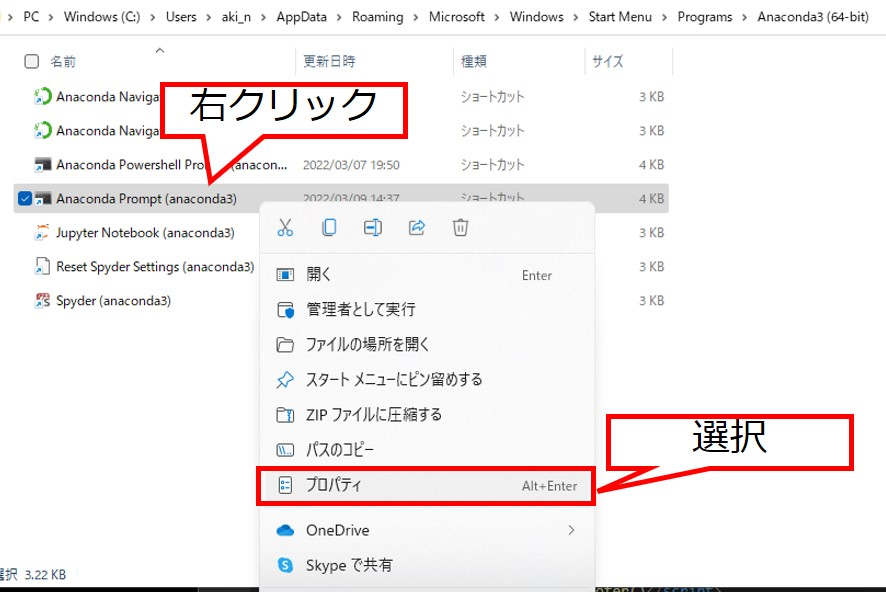
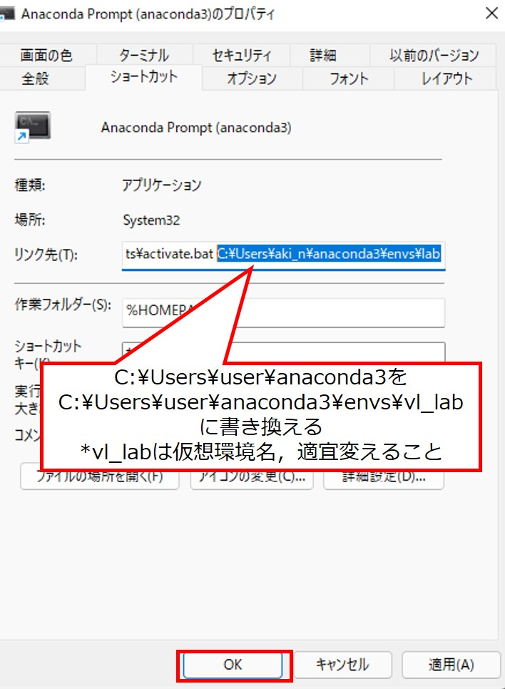

気象データ解析のためのPython環境構築(For Windows)
このページでは2022年度のVL講習会向けに，Anacondaを使ってPython環境構築する場合の一例をまとめています。
Windows 10の場合を紹介していますが，11でも同様の方法でインストールできます。
*全部インストールすると10 GB近くになります。インストール前にHDD(SSD)の容量確認することをおすすめします。
- Anacondaをインストールする
- 解析用の仮想環境を構築する
- 構築した仮想環境への移動
- 研究に必要なツールのインストトール
- netCDF4 (ERA5などで使われているデータ形式であるnetCDFを扱うためのライブラリ) 公式ドキュメント
- cfgrib (JRA-55などのデータ形式であるGRIBを扱うためのライブラリ) 公式ドキュメント(GitHub)
- jupyterlab (Pythonの開発・実行環境) 公式ドキュメント
- metpy (気象データの解析に特化したライブラリ) 公式ドキュメント
- ライブラリがインストールできたかどうか確認する
- conda-forgeからのインストールを最優先させる
- その他(以下の設定は任意)
- Py-ART: 気象レーダデータ解析・可視化ライブラリ公式ドキュメント
- PyBufrKit: PythonでBUFRフォーマットのデータ(気象庁ウィンドプロファイラ等)をデコードする 公式ドキュメント
- Satpy: 衛星データの処理・可視化ライブラリ 公式ドキュメント
ここからAnacondaのインストーラをダウンロードする。その後，ダウンロードしたインストーラを実行する。
"64-Bit Graphical Insteller"を選択

インストーラーを実行するとこのような画面が表示される。
"Next"をクリックして次へ
"I Agree"をクリックすると次にすすむ
"Next"をクリックして次へ
anacondaのインストール先を指定し，"Next"をクリック
*ほとんどの場合そのままで大丈夫
指定したインストール先にスペースが入っているとNextクリック後このようなメッセージが表示される
"OK"を押すことで次にすすめる(今回はこのメッセージを無視する)
"Register Anaconda3 as the~"だけ有効にする(AnacondaのPythonをデフォルトのPythonにする)
インストールには数分かかる
完了後，"Next"をクリック
"Next"をクリック
図では片方チェック入っているが，どちらも外してから"Finish"をクリック
Windowsの検索機能で"anaconda"と検索するといくつかツールが出てくる
今回は"Anaconda Prompt (anaconda3)"を使用し環境構築をおこなう *Anaconda Powershell Promptでもよい
仮想環境を構築し，必要なライブラリのみをインストールすることでバージョン管理などが容易になる。仮想環境の構築はAnaconda Prompt上で以下のように実施する。
conda create -n vl_lab -c conda-forge python=3.9
途中"Proceed ([y]/n)?"ときかれる。yを入力してからエンターを押すと仮想環境構築が始まる。
この場合"vl_lab"という名前の環境が作られ，環境構築時にpython3.9がインストールされる(vl-labは任意の名前に変えても良い)。-nは環境名を指定するオプション，-cはライブラリのインストール元を指定すオプションである(今回はconda-forgeを使う)。
以降，"vl_lab"という仮想環境を作ったものとする。conda activateを実行することで仮想環境に切り替わる。
(base) conda activate vl_lab (vl_lab) #Activateした仮想環境に切り替わる
気象データの解析に必要なライブラリをvl_lab環境にインストールする。numpyやmatplotlibなど主要なものは以下のものをインストールする際に依存関係(あるライブラリが動作するために必要なライブラリ)で一緒にインストールされる。
仮想環境がvl_labであることを確認した後(ターミナルの先頭が(vl_lab)であれば良い)，以下のコマンドを順番に実行する。-c conda-forgeはconda-forgeからインストールすることを示し，-yはインストールの確認をスキップするオプションである。
conda install -y -c conda-forge netCDF4
conda install -y -c conda-forge cfgrib
conda install -y -c conda-forge jupyterlab
conda install -y -c conda-forge metpy
ここではpython3のインタラクティブモードでライブラリをインポートすることにより確認する。 *#はコメント(入力しなくて良い)
(vl_lab) python #Python 3.9.10 | packaged by conda-forge | (main, Feb 1 2022, 21:22:07) [MSC v.1929 64 bit (AMD64)] on win32 #Type "help", "copyright", "credits" or "license" for more information. >>> import numpy >>> import matplotlib >>> import pandas >>> import xarray >>> import cfgrib >>> import metpy >>> import netCDF4 >>> exit() #インタラクティブモードを終了する。
エラーメッセージ等が表示されなければインストールが成功している。
"ModuleNotFoundError: No module named ライブラリ名" とエラーが出てきた場合，そのライブラリを再度conda installによりインストールしてからもう一度確認してみる。
先ほどはcオプション(-c conda-forge)により全てのライブラリをconda-forgeからインストールするよう指定していた。cオプションで指定しなかった場合，初期設定ではDefaultsチャンネルからインストールするようになっている。Defaultsチャネルとconda-forgeチャネルのライブラリは互換性はあるが100%ではないため，混ぜると不具合が生じることがある。
したがって，ここではデフォルトで全てのライブラリをconda-forgeからインストールするための設定をおこなう。
conda config --add channels conda-forge #conda-forgeをインストール時に最優先で参照するチャネルとして追加 conda config --set channel_priority strict #conda-forgeから全てのライブラリや依存関係をインストールする conda config --get channels #現在のチャンネル設定の表示 #--add channels 'defaults' # lowest priority #--add channels 'conda-forge' # highest priority
以上により，conda-forgeが最優先で参照するチャネルとなった。これ以降，-c conda-forgeを入力しなくてもconda-forgeからインストールされるようになる。
参考：Conda-forgeドキュメント(Using multiple channels)
・Anaconda Prompt起動時にbase環境ではなく解析環境を起動させる
デフォルトではAnaconda Promptを開いた際に(base)環境が起動するようになっている。最初から解析環境を起動させたい場合は以下の通りショートカットキーのリンク先変更する。
*Win10と11でやり方は同じ。Anaconda Powershell Promptでも同様の方法で設定できる。
メニュー上でAnaconda Promptを右クリックし，ファイルの場所を開く
Anaconda Promptを右クリックし，プロパティを選択
ショートカットタブを選択し，リンク先の最後の方に仮想環境のパスを追記する。
これによりターミナル起動時に"conda acitvate vl_lab"が実行されるようになる。Anaconda Promptを再起動すると最初から解析環境になっているはず。
・その他気象データ解析に使いそうなライブラリのインストール
以下は必要に応じてインストールしてください
*日本のレーダデータを処理するにはCF-Radial形式等に変換をする必要がある。
conda install -y -c conda-fogre arm_pyart
anacondaにないのでpipからインストールする
pip install pybufrkit
conda install -y -c conda-forge satpy